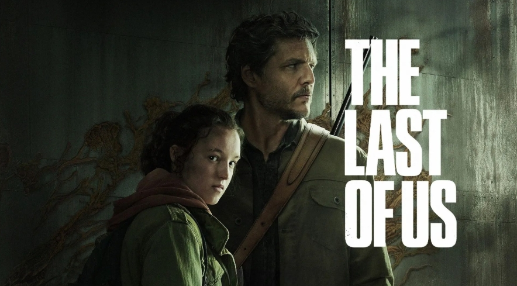

THE LAST OF US
En un mundo devastado por un apocalipsis zombi, donde la humanidad lucha por sobrevivir, la esperanza es un bien escaso. La travesía de Joel y Ellie, dos almas unidas por la tragedia y la supervivencia, se convierte en una historia épica de valentía, sacrificio y redención. Mientras enfrentan hordas de infectados y las amenazas de otros seres humanos, los sobrevivientes deben decidir qué están dispuestos a perder para mantener viva la chispa de la humanidad en un mundo arrasado por el caos.